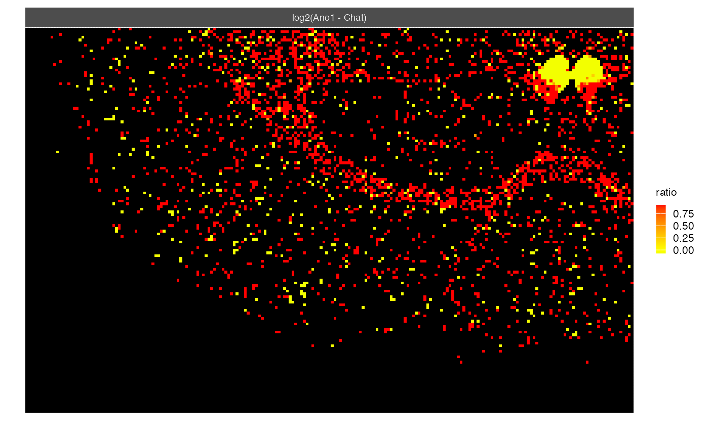

R/visualization.R
gene_contrast-STGrid-method.RdThis function performs a contrast analysis between two features (genes) using an STgrid object as input. It calculates the log2 fold change between the two features and visualizes the results as a rasterized image.
# S4 method for STGrid
gene_contrast(
object,
feat_list_1 = NULL,
feat_list_2 = NULL,
low_color = "green",
mid_color = "yellow",
high_color = "red",
na_color = "black",
midpoint = 0,
pseudo_count = 1,
centered = TRUE,
trim_ratio = 0.025
)An STGrid object representing the spatial transcriptomics data.
A list of features (genes) for the first condition.
A list of features (genes) for the second condition.
Colours for the low end of the gradient.
Colours for the midpoint of the gradient.
Colours for the high end of the gradient.
Bin with 0 value for both features are set to NA. The color for NA values.
The midpoint (in data value) of the diverging scale. Defaults to 0.
A small value added to avoid log transformation issues. Default is 1.
A boolean indicating whether to center the log2 ratio by subtracting the mean. Default is TRUE.
A ratio for trimming extreme log2 ratio values. Default is 0.025.
A ggplot2 object representing the heatmap of log2 fold changes between the two feature sets.
example_dataset()
#> |-- INFO : Dataset 11284233/files/Xenium_Mouse_Brain_Coronal_7g was already loaded.
xen <- Xenium_Mouse_Brain_Coronal_7g
gene_contrast(xen, feat_list_1="Ano1", feat_list_2="Chat")

gene_contrast(xen, feat_list_1=c("Ano1", "Necab2"), feat_list_2=c("Chat", "Nrp2"))